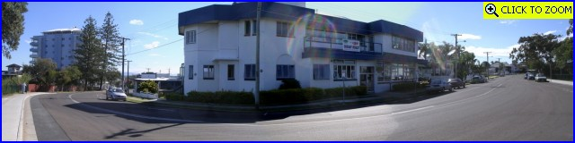
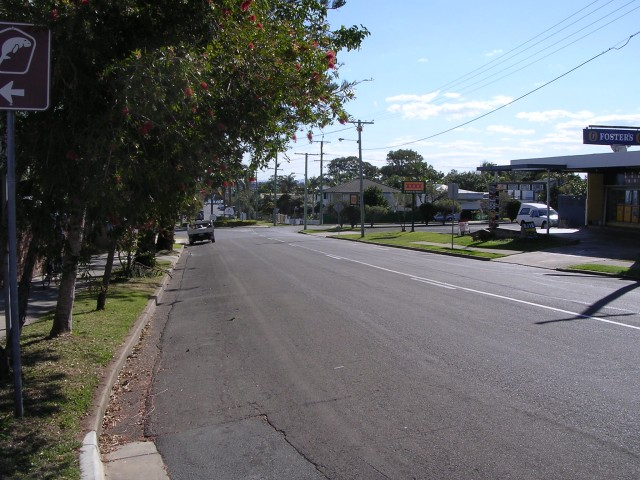
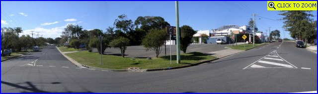
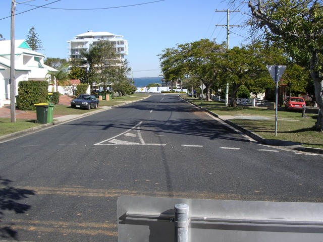
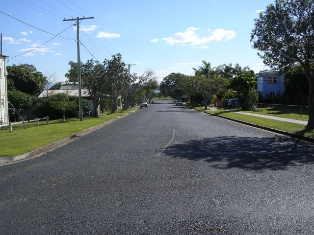
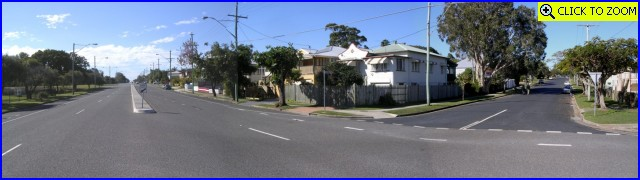
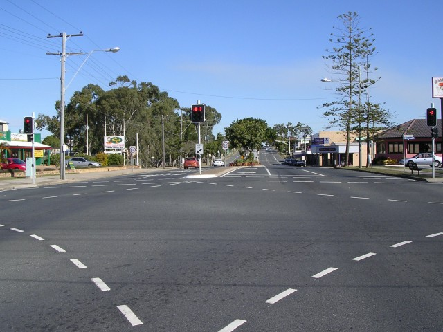

Numbers and arrows on the map represent the location where the photographs were taken. Scroll down to view the photographs.
Woody Point - Lilla Street to Oxley Avenue, via Kate & Alfred Streets
|| Contents || Lilla-Kate-Alfred-Oxley | Duffield-Ernest-Kate-Alfred-Gayundah || Home ||
Numbers and arrows on the map represent the location where the photographs were
taken. Scroll down to view the photographs.
Return to racingcircuits.net's Photo Archive Main Index

01 - Palace Hotel at Start/Finish. Race direction was to the left. [Click here to zoom in]

02 - Lilla Street looking towards Kate street.

03 - Lilla Street (right >) onto Kate
Street (< left). [Click here to zoom in]

04 - Looking back down Kate Street from Alfred Street.

05 - Alfred Street from exit of Kate Street. There was only a row of
haybales diagonally across the road at this point to
seperate the cars going out onto Oxley Avenue and those returning back down Kate Street.
Today there is a roundabout.

06 - Alfred Street (right >) onto Oxley
Avenue (< left). [Click here to zoom in]

07 - Looking back down Oxley Avenue from the junction at Duffield Road.
Photographs and Text ©Neil Fackerell. Reproduced here with kind permission.
{kind=link}
{kind=link}
{kind=link}